口述实录 | 一个普通军人的抗疫纪实
原文链接 备份链接 我希望这些行为能够影响其他人也加入“管闲事”的行动中来，这既是一个党员应该做的，也是一个军人应有的担当。 口述 | 苏雨昕 整理 | 周 洁 这个春节过得和以往都不相同。 整个正月，我没能回家。倒不是因为我去过武汉， …
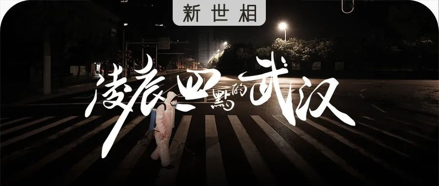
- 这是 新世相 的第1201 篇文章 -
Sayings:
两周前，我曾问：你见过凌晨四点的武汉吗，是什么样？
之后，我们收到了接近 2000 个人的讲述，包括 150多个在武汉的人。他们的故事，构成了今天这条推送的两部分：
1、一部 9 分钟的纪实短片
2、12个武汉从深夜到凌晨的故事
凌晨四点，多年以前的这个时间，科比在洛杉矶街头看着光明一点点到来。受他的启发，过去几年里，我们用短片和真实故事的方式记录了凌晨四点的北京、上海、重庆。
而这次，在这个特殊的时期，我们记录下了从夜里 9 点到凌晨 4 点的武汉。
有残酷，有温柔——
一个男孩给刚认识的婴儿当了志愿奶爸；
一位年轻护士送走了抢救失败的老人；
一位孕妇在被隔离的产房顺利生下了女儿；
一只流浪猫在小区封禁前被人领回家了……

你会在短片《凌晨四点的武汉》里看到他们的身影，在后面的文章里读到他们的故事。
和往常不一样的是，这次短片中大部分的内容，是几十个在武汉的普通人，在简单的指导下自拍上传给我们的。一些画面可能有点模糊、摇晃，却十分真实——
↑点击观看↑
他们都是很普通的人，会害怕，会想念父母、女儿、男朋友，想念热干面，也会觉得口罩勒得脸好疼……
为了早日从疫情手里赢回普通的生活，通宵达旦地努力着——
“我们不睡，这座城就不会输。”
凌晨四点的武汉
口述：新世相在武汉的读者和朋友们

“我们站得远远的，给她唱了生日歌”

我们酒店里住了两个援鄂的医疗队。
有一个广西来的医生叫温汉春，从登记的身份证号码发现她那天过生日，我们特地做了蛋糕和长寿面。
她是春天在武汉出生的，所以起了这个名字。我们给她写了句祝福：“汉无恙，春归来”。
唱生日歌时我们都站得远远的，但我们的心很近。
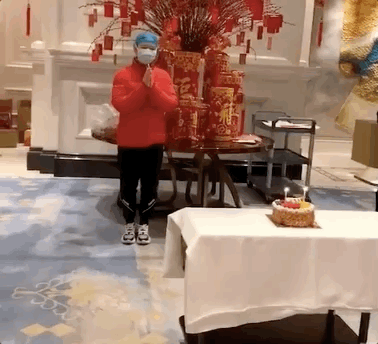
疫情结束后的愿望：

“我在医院外巡逻，守护住院的妻子”

情人节前夕我拍一个vlog，遇到一对夫妇让我特别感动——
丈夫叫陈升浩，37 岁，是江岸区分局大智派出所的警察。他的妻子刘昌璇是武汉中心医院的医生，感染了肺炎，1 月 22 开始住院治疗。
这之后陈升浩主动报名了武汉中心医院附近的值守工作，他说：
“我每次巡逻从那边走的时候，都会想到我在守护我老婆。”

这是晚上 9 点半，陈升浩和在病床上插着管的老婆视频：
——“你今天感觉怎么样？你在那边加油，然后早点回来嘛。”
——“我康复了之后，我不会在家里待着，我要马上去前线工作的。”
——“那以前你说好要推我晒太阳，说话要算数哦。”
最近的好消息是，陈升浩的老婆 2 月 16 日已经出院了，身体状态还不错。
疫情结束后的愿望：


“下班回家想抱抱女儿，可她睡着了”

我们每天在机场保障航班，组织人员装车转运物资和行李，特殊时期 24 小时待命。
连续工作 8 天后，晚上 11 点半回家，一推门进屋，发现女儿还撑着没睡，在等我。
本来准备抱一下她的，后来一想，算了。现在是特殊情况。
本来想洗了澡换了衣服之后再抱她，但洗完出来她已经睡着了。

这是我女儿画的，病毒下面粘了弹簧，病毒一出来，她就用锤子使劲儿捶。

疫情结束后的愿望：
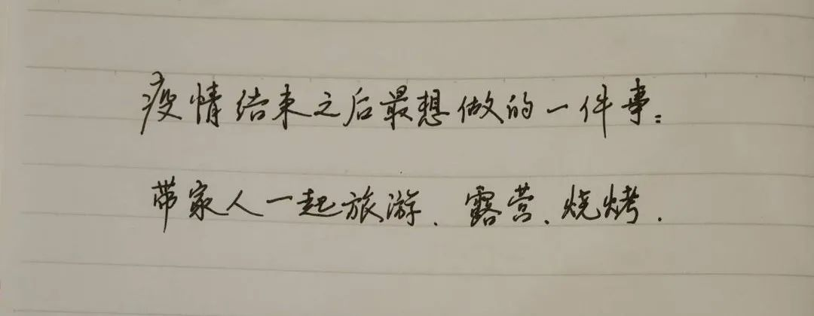
 “亲历汶川地震的陌生人，
“亲历汶川地震的陌生人，
给我发了条微信”
在家隔离这几天，每晚我都在快手上直播教大家画画，画完跟大家聊聊天。
印象最深的是有个四川都江堰的朋友说，他自己在家做火锅，想寄给我，给我发了很多照片。
我说现在快递没法进来了，他还是很坚持，又想从我家附近网购东西给我。
他说：“地震的时候，全国都在帮我们啊。”
疫情结束后的愿望：


“我给 11 个月大的宝宝当志愿奶爸”
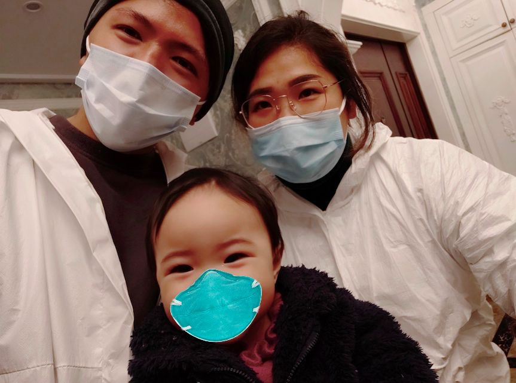
这个 11 个月大的小女孩叫小格格。她家好几口人都确诊了，她住院观察，孩子爸一个人照顾不过来。
我经常抱着哄着放歌给她听。她喜欢公主抱，还要到处晃悠，不喜欢一动不动，坐着会哭，也不能放床上，就爱在你怀里仰着头东看看西摸摸。
有天夜里我抱着哄她睡觉，哄着哄着我俩都睡了。这张照片是她爸爸拍的。
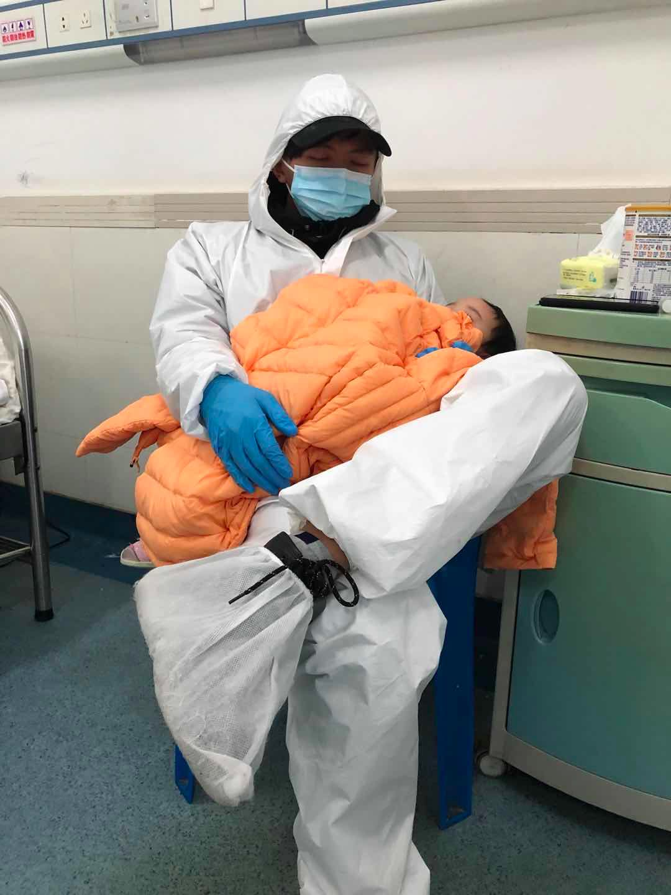
在病房里要戴3层口罩，穿防护服，手套10分钟换一次
疫情结束后的愿望：
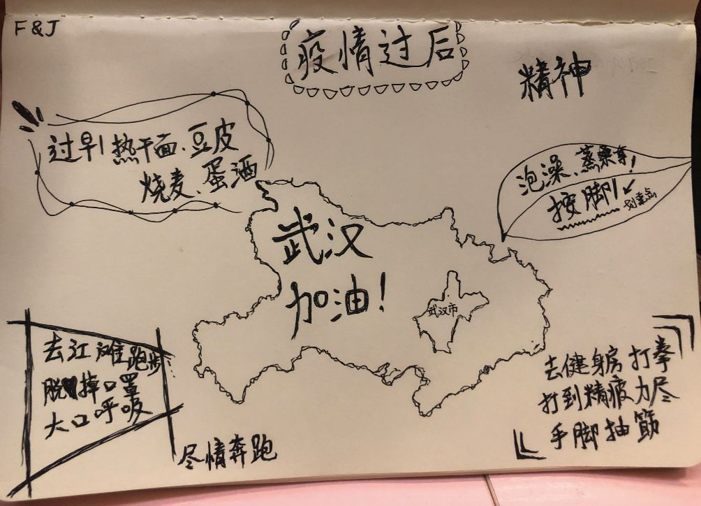

**“全力抢救也没救回来，很无力”
**

有天凌晨，一个七十多岁的爹爹（爷爷）突然病情恶化，立马推倒抢救室除颤，胸外按压等等，最后还是没救回来。
那一刻，有深深的无力感。
为了让他走得体面一点，我和同事花了一个小时给他整理仪容，擦拭身体、消毒……
老人的儿子收好遗物，没说话，也没哭，但我忘不了他走****的时候那微微驼下的背影。
疫情结束后的愿望：
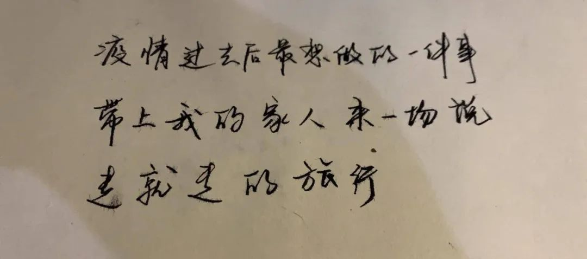
“寒潮来的晚上，我收养了第 7 只猫”
家附近有只粘人的小野猫，叫小花，我经常去喂它。
2 月 15 日晚上寒潮来了，风雨特别大，我特别担心，凌晨 3 点左右下去找它。它知道我来，马上就蹦出来了。
其实我当时家里已经收养了 6 只猫。但因为武汉管得越来越严，不让出去，我放心不下，就把它也收养了。
武汉下雪那天，小花在雪里打滚，可开心了。
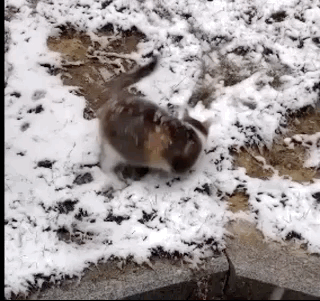
疫情结束后的愿望：
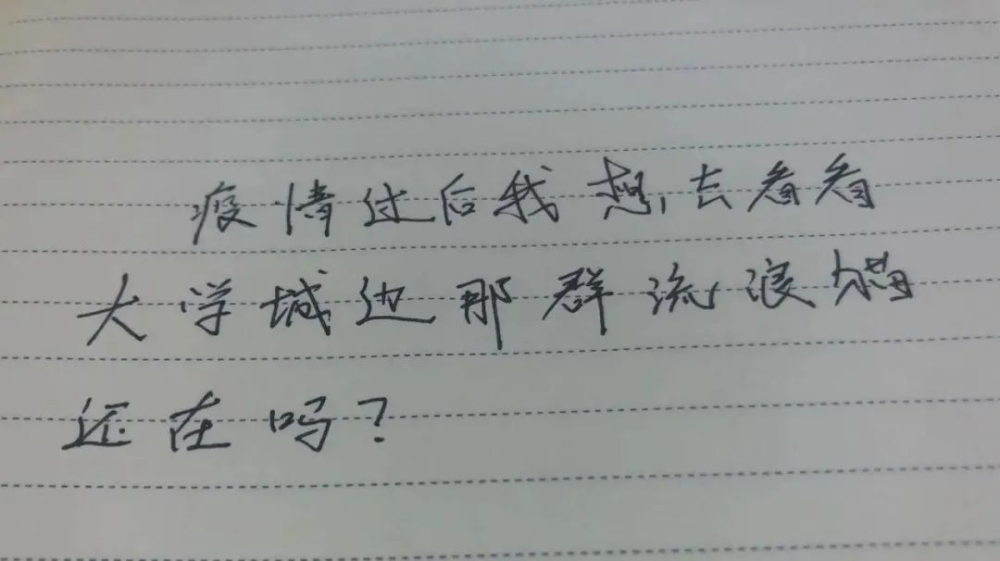

“跟兄弟们蹲在工地宿舍吃泡面”

从雷神山医院到鄂州雷山医院，我一直在队里负责团队沟通和协调。
有天凌晨加班加点抢建完 ICU 病区，宿舍没通电也没开水，我们从门卫那里接了电，借了开水壶，每人一桶泡面，又是宵夜又是早餐。
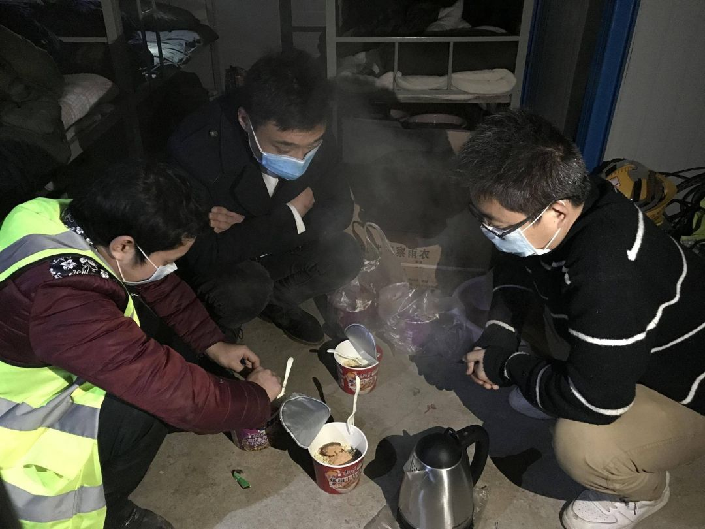
这张是在雷神山工地的一位大叔，拿到工资挺高兴的，他说他要立马转回去给家里，让家人去买菜。

昨天凌晨三点，医院开始进病人了，我们的团队穿防护服在里面继续调试设备。
我觉得，他们和医生护士一样高尚。

疫情结束后的愿望：

“在吊车上待了 5 天 5 夜，
我也动摇过”
大年三十在家看春晚时接到的电话，说火神山那边开吊车缺人。
当时老婆一个劲儿地叫我别去，我还是去了。身为武汉人怎么能在此刻怂！
5 天 5 夜没下车，累了就在车上睡会儿。
每天都很崩溃。唯一开心的事是，和工友吃槟榔喝红牛。
有天吃了晚饭，老婆打电话给我说：“你别建好了医院自己住！”
其实进病人之后我动摇过，但还是接着干了 3 天。
看到病人有地方住很有成就感，这么多天的苦没白吃。
疫情结束后的愿望：
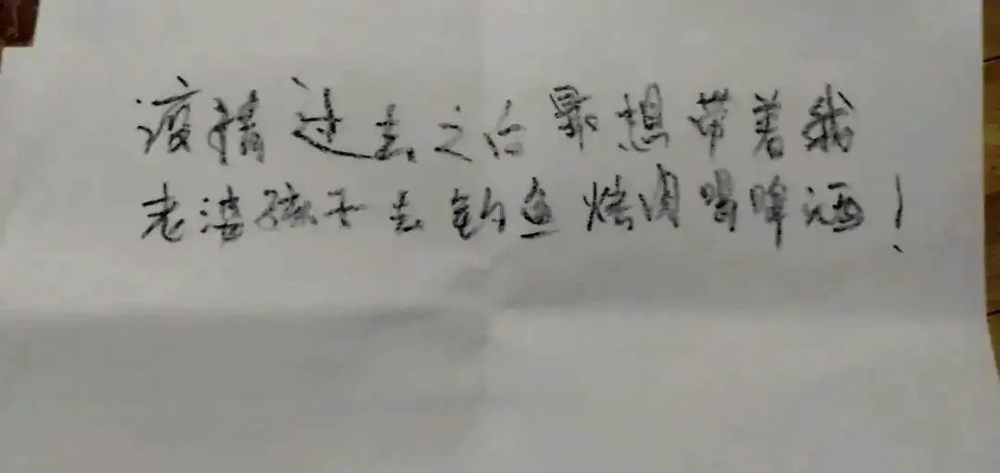

“情人节晚上，
我坐在货车上收到了玫瑰花”

前几天晚上接了另外两个志愿，去帮忙搬运外地捐赠的一批苹果。
一般物资都是几吨往上走的，搬完就凌晨 3 点了。
那天是情人节，有个男生车上剩了几枝给医护人员准备的玫瑰花。
拿出来一起拍照了，还挺甜的。

疫情结束后的愿望：
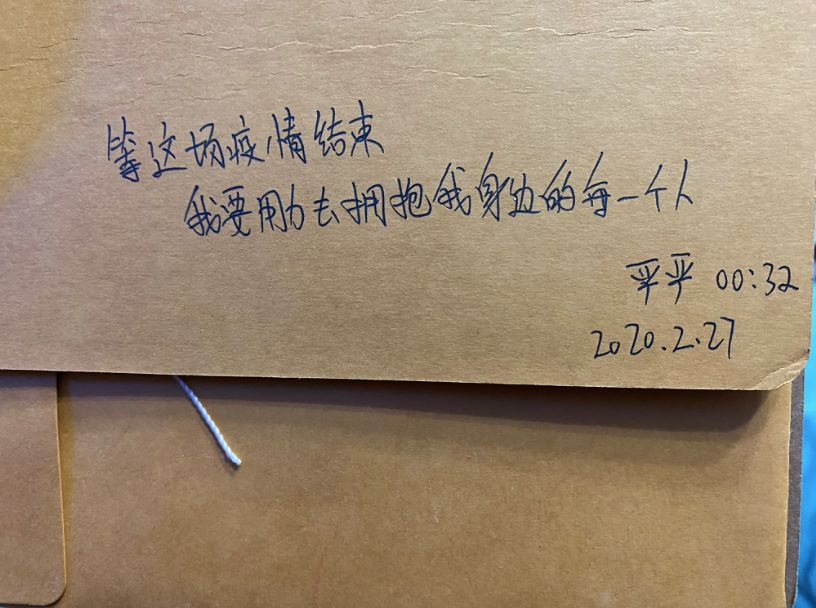

“穿上四层防护服不到 10分钟，
我冒冷汗了”
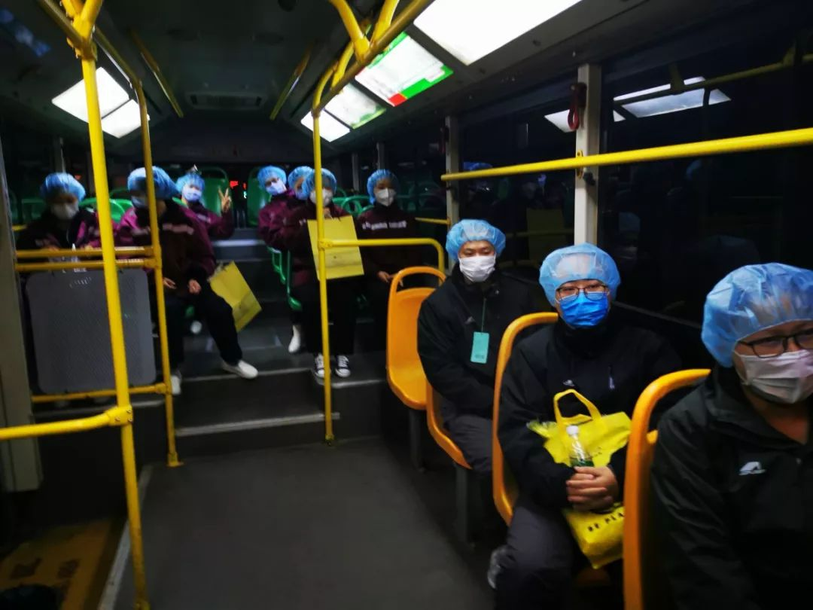
从重庆到武汉的第一天，凌晨 4 点去医院上班。大家戴着口罩和防护帽，没有一个人讲话，氛围凝重。
气温大概只有 4℃，市区里空空荡荡，寂静无声。看到街边的巨幅电子屏上面写着：“武汉加油”，心里突然有了股劲儿。
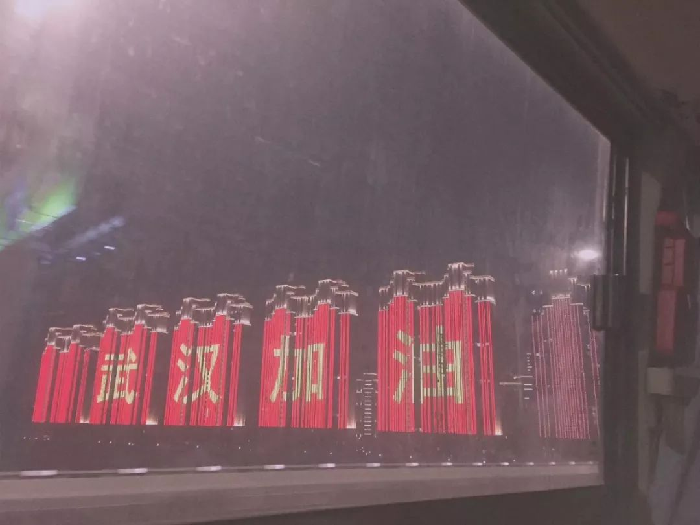
到了武汉大学人民医院，我们在清洁区的通道里换防护服，洗手衣+防护服+隔离衣+自己的衣服，一共四层。再戴上两个口罩和一个护目镜。
穿戴好后，不到 10 分钟，我就开始冒冷汗、心慌。于是赶紧脱掉，让自己深呼吸几口空气，才慢慢觉得恢复了。

“必须克服心理压力”，我在心底这样告诉自己。然后鼓起勇气重新穿戴好，开始了今天的工作。
疫情结束后的愿望：
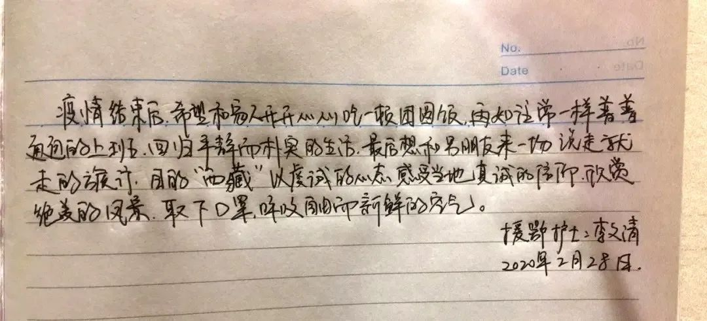

“女儿出生时医生跟我说：
别怕，母女平安”
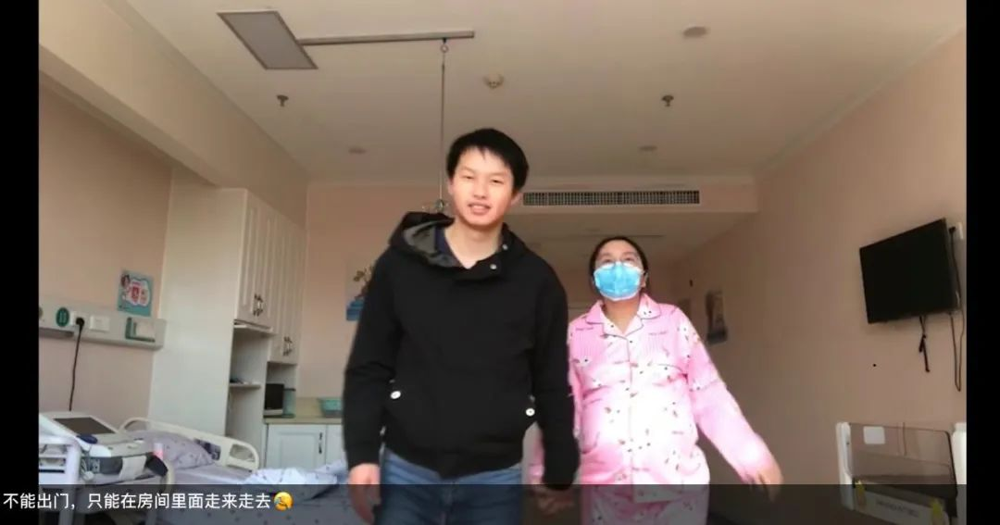
这个春天最开心的事，就是我的女儿在 2 月 20 号平安出生了。
陪产时医生让我拿毛巾和小孩衣服，我急急忙忙的，慌手慌脚。医生说你别怕，母女俩都平安，你别倒下了。
我有点懵，一时间做爸爸了，感觉好像自己还是个孩子。
老家的父母过不来武汉，我一个人照顾母女俩，凌晨四点在给她换尿不湿、兑奶粉。
我们给女儿起名字尹楚宁，“楚”代表湖北，“宁”代表平安、安宁。
希望她的出生能够给湖北、给武汉带来平安。

疫情结束后的愿望：
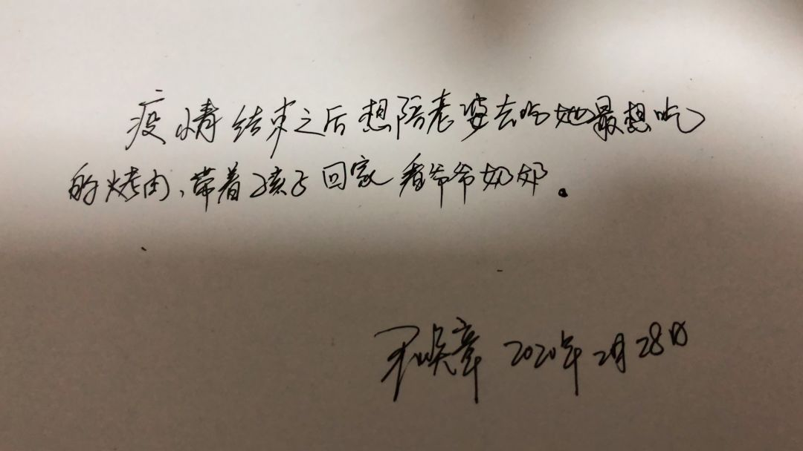
【写在最后】
凌晨四点是这样的一个时刻：
黑暗和光明交界，逝去和新生交界，属于夜晚的惶恐和属于清晨的振奋交界。
这一个多月里，也许你也在某个深夜或凌晨因为工作、因为生活、因为照顾身边的人而醒着。
希望这些人的故事能陪你一起，等到太阳升起来。


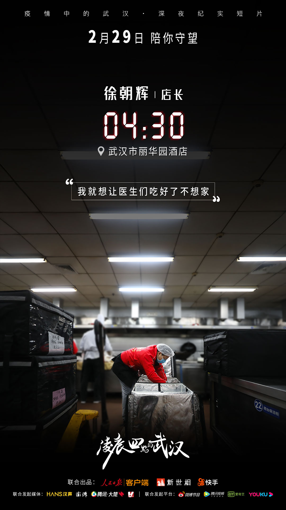
←左右滑动查看更多图片→
最后，还想感谢人民日报客户端、快手和我们一起推出这部短片。疫情中，有很多在武汉的人，都在用文字、图片和视频的方式记录自己的工作和生活。我们从这些故事里看到了聚光灯之外普通人的付出，更看到了 900 万人在这场战役中的坚持。这是我们和人民日报客户端、快手联合推出这部纪录片的最大初衷。
我们也感谢每一个为这部片子提供了帮助的普通人。除了在武汉本地参与拍摄的 5 个团队，还有 45 个普通人在简单的拍摄指导下，自拍上传了视频给我们，很不容易。
谢谢他们。
撰稿：Cassie
采写：罗梦倩 樊悦书 牛晓宇 张宁宁
主编：李妙多


晚祷时刻：
“等风雨经过，等我们相见”
晚安，武汉
早安，每一个等天明的人
↓↓↓****
原文链接 备份链接 我希望这些行为能够影响其他人也加入“管闲事”的行动中来，这既是一个党员应该做的，也是一个军人应有的担当。 口述 | 苏雨昕 整理 | 周 洁 这个春节过得和以往都不相同。 整个正月，我没能回家。倒不是因为我去过武汉， …
原文链接 备份链接 2月19日以来，武汉新增病例在300-500区间出现一个持续10天之久的“拉锯期”，不难想像战况之惨烈。但指标显示这种胶着局面将很快结束，进入一马平川阶段 文 |《财经》数据研究员 徐进 图 |《财经》 …
原文链接 备份链接 图、文 丨 雷钊 编辑 丨 林鹏 吕萌 武汉长江航运总医院（下文简称长航医院）感染科的医生许绿叶再过一年多就要退休，新型冠状病毒肺炎疫情扩大后，她临危受命成为医院专家组组长。今年59岁的她，曾担任感染科主任，参加过多起 …
原文链接 备份链接 黄女士及其家人是如何“顺利完成进京全流程”的？当前是否存在更多的“黄女士”？这些令人疑惑的问题，有待一天之内即迅速成立的三个调查组，还公众合理合法的结论。 文 | 王仲昀 Anne 2月26日，北京发布的一例由武汉返京 …
原文链接 备份链接 国内非湖北地区25日新增病例24例，其中北京10例，从这些地方接受医学观察者数量、新增疑似病例以及待排查疑似病例等上游数据均持续稳步下降的态势看，此数据大幅反弹应属异常 文 |《财经》数据研究员徐进 图 |《财经》视觉 …